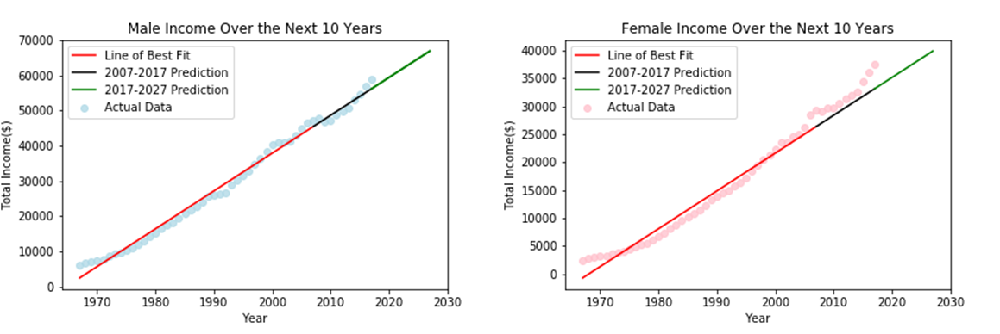

Looking into the dataset we can see there is a linear trend and since the data is linear we decide to use Linear Regression algorithm to fit a line through the data.
Using income data from 1967 to 2007, we predicted the 2007 to 2017 data and compared it to the actual data. Then we predicted the data for the next 10 years, 2017 to 2027.
Train the model with male and female data from 1967 to 2007:
After training the model with 40 years of data, we run the R-squared. For the male model the result is 0.986 and for the female model is 0.971. As a "good" R2 Score will be close to 1, we can assume the model is accurate.
Prediction of 10 years of data, 2007 to 2017, using the model trained with 40 years of data, 1967 to 2007:
Male Actual Data Vs. Male Predicted Data and the Male Residual Plot:
Female Actual Data Vs. Female Predicted Data and the Female Residual Plot:

Prediction of the next 10 years, 2017 to 2027:
